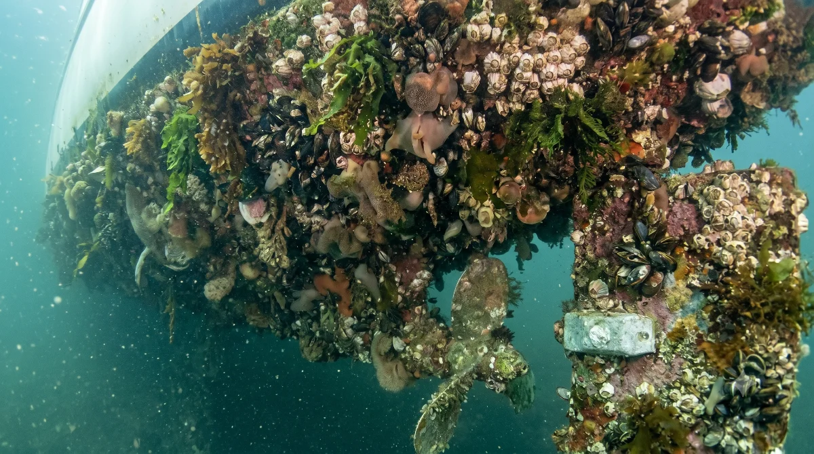
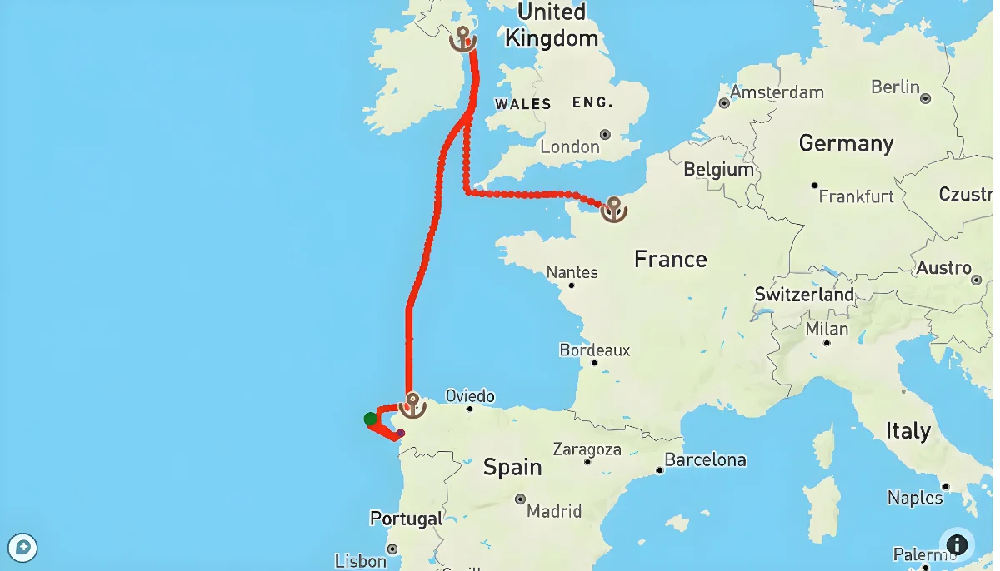
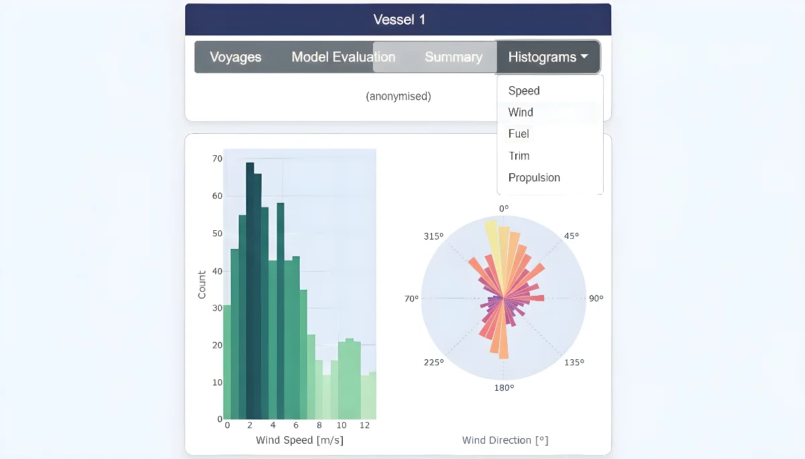
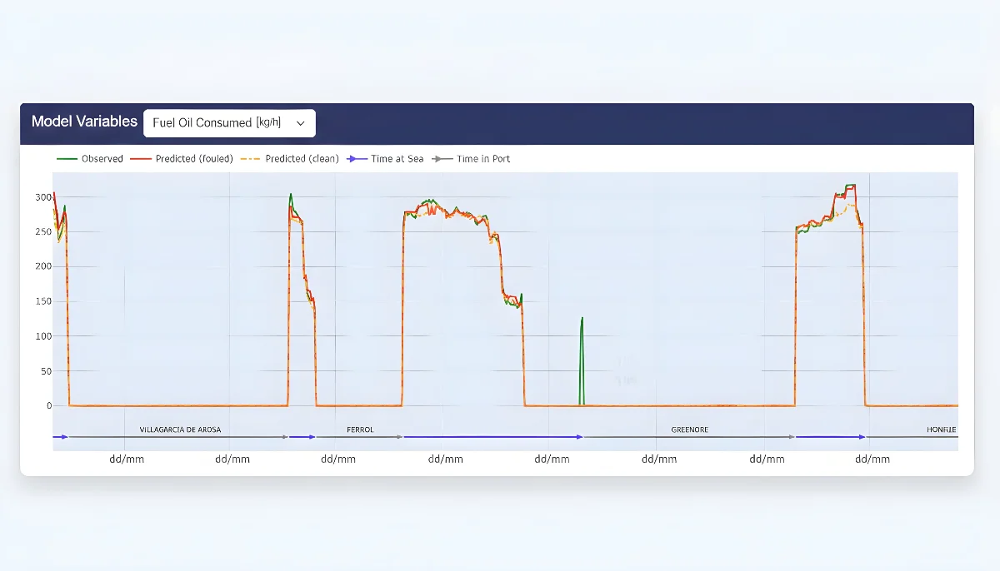
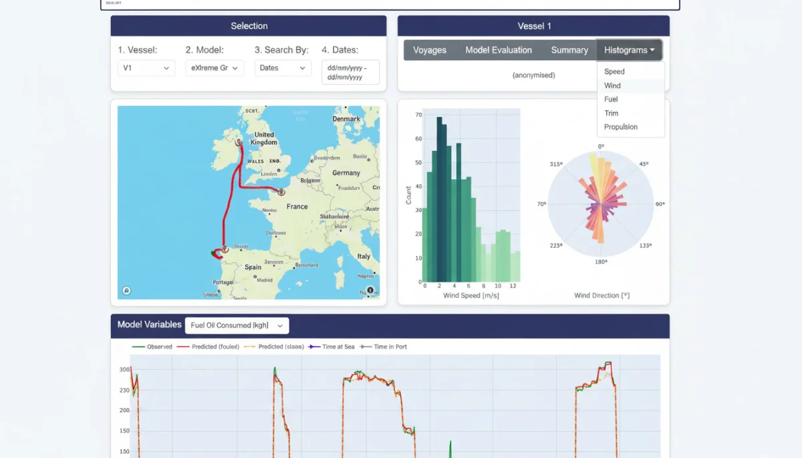
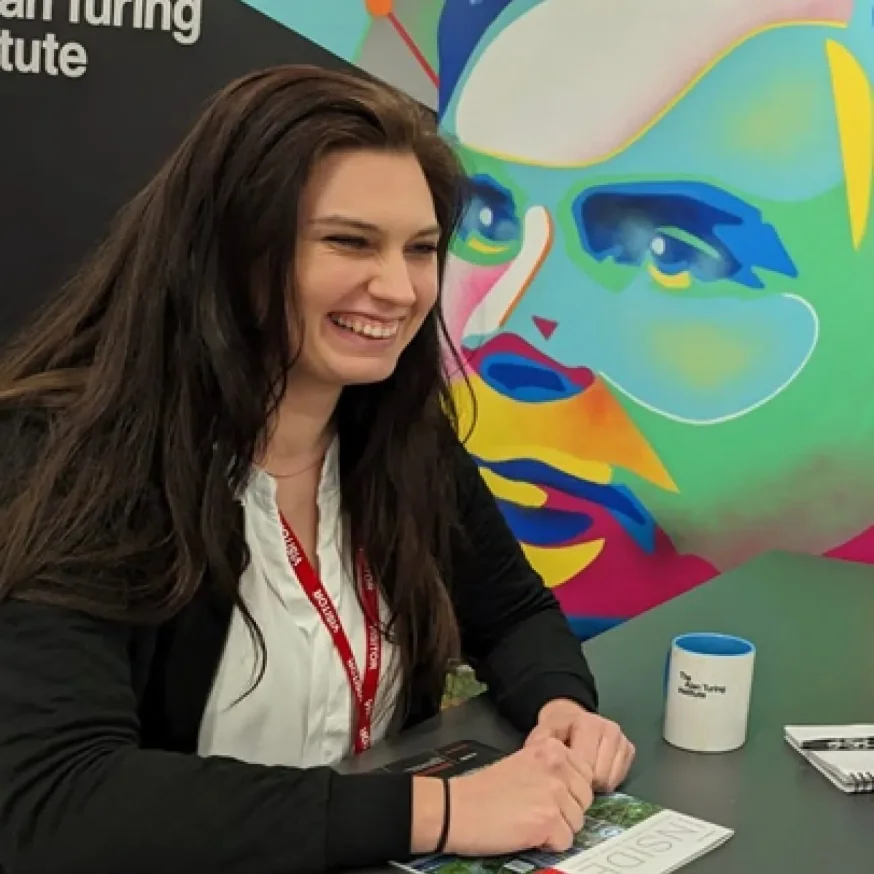

Powerful Tools. Real Results.
Hull fouling costs the shipping industry billions in excess fuel every year yet most fleets still rely on fixed cleaning schedules that ignore the actual condition of their vessels. SeaFlint changes that. Our platform combines real voyage data, advanced machine learning, and an intuitive dashboard to give fleet managers, analysts and researchers the tools to act at exactly the right moment.
Why SeaFlint?
SeaFlint is a research initiative by the University of Southampton, developed in partnership with Carisbrooke Shipping Ltd, tackling one of the maritime industry's most persistent efficiency challenges: biofouling.
When microorganisms plants, algae and small marine animals accumulate on a ship's hull, they increase drag, drive up fuel consumption, and raise emissions. Yet cleaning too early means unnecessary costs and lost operational time. Cleaning too late means wasted fuel. The question has always been: when is the right moment to clean?
SeaFlint answers that question with data. Using real voyage records and advanced machine learning including XGBoost and Random Forest models we built a dynamic optimization framework that predicts the precise point at which cleaning delivers measurable fuel savings. Our results show fuel reductions of up to 5% over four years, even after accounting for cleaning costs.
The platform is accessible through an interactive web dashboard that gives fleet managers, analysts and researchers a shared space to monitor vessel performance, validate predictions, and make cleaning decisions grounded in evidence not fixed schedules.

Performance made visible
Operators see each vessel's hull condition, fuel impact and recommended cleaning window.




The people behind SeaFlint
A University of Southampton team pairing machine-learning research with real fleet data from Carisbrooke Shipping.

Alain Zemkoho
Professor of Mathematical Optimization University of Southampton
Profile arrow_outwardGrounded in peer-reviewed research
SeaFlint is built on peer-reviewed academic research. If you want to dive deeper into the methodology, the machine-learning models, or the optimization framework that powers our platform, our full paper is freely available.